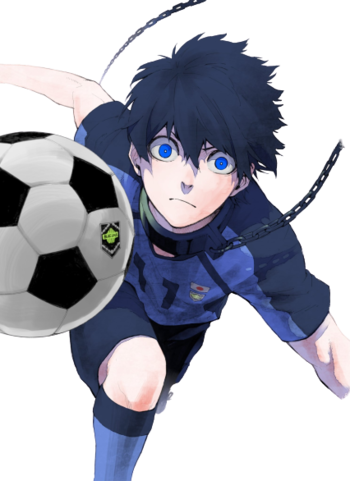

La relève de Captain Tsubasa ?
De par sa dynamique et son code de production, le nouveau manga axé sur le football ne cesse d'impressionner, rappelant alors l'oeuvre de Yoichi Takahashi.
De par sa dynamique et son code de production, le nouveau manga axé sur le football ne cesse d'impressionner, rappelant alors l'oeuvre de Yoichi Takahashi.